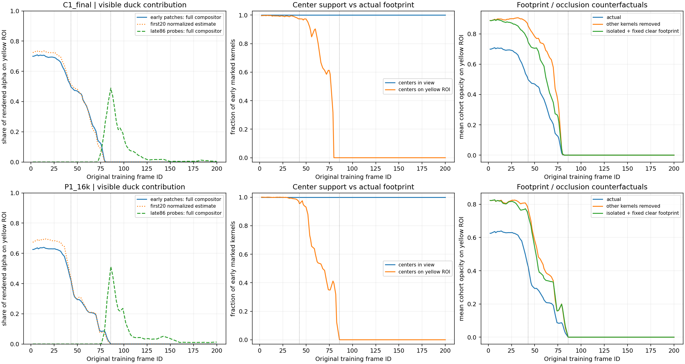
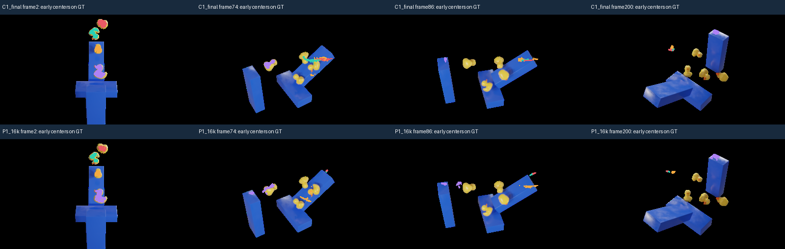
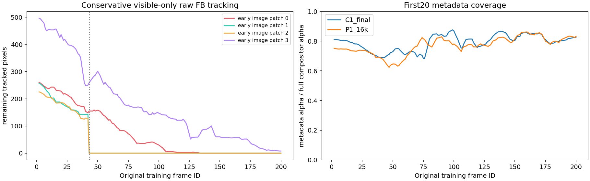
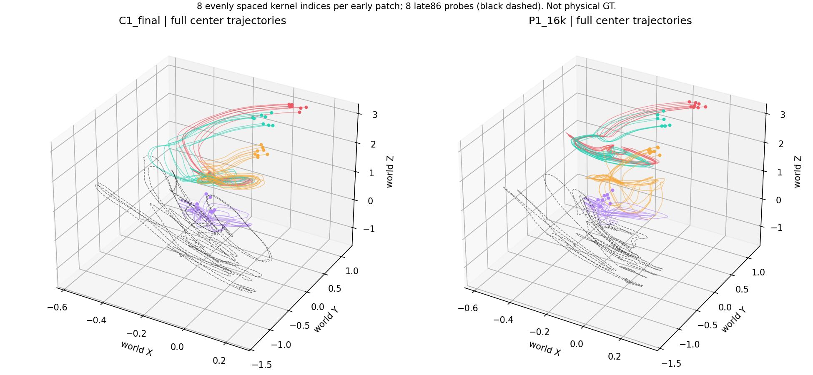

Read-only: C1 final50k and P1 stopped16k before shape updates. All 120 TRAIN frames. No new model training. Early patch colors are not material IDs; black or untracked regions remain unknown. The fourth image encodes R actual, G isolated, B isolated fixed-clear-footprint contribution. Fifth: conservative estimated FB visible tracking, no re-ID across ambiguous gaps.
Assessment | Input integrity | Independent checks



